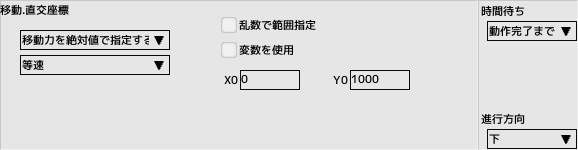

■元のページへ戻る
■元のページへ戻る
4.敵キャラクタを作成する
敵キャラクタ用のスプライトを作成し、キャラクタとスクリプトを作成します
前回のチュートリアルで作成したプロジェクトファイルを開いておいてください
敵用スプライトの作成
スプライトを新規作成し、名前を'ENEMY'とします
リソースフォルダからimg_zako00.bmpを登録します
パターンリストと当たり判定を入力します
パターン11はダミーとして置いておきます
敵用キャラクタの作成
キャラクタを新規作成し、名前を'ENEMY-A'とします
スプライトを登録し、スクリプトを新規作成します(名前'ENEMY-A')
右図のようにパラメータを入力します
体力を増やすと敵が固くなります
敵用スクリプトの作成
先ほど作成したスクリプトを編集します
タスク「0:メイン」に移動カテゴリの直交座標を配置
その下に制御カテゴリの通過を配置します
パラメータを右図下図のように設定してください
出現すると直進する敵が出来ました
画面外へ出ると自動消滅します

テスト実行する
テストプレイウインドウを表示し、プロジェクトのキャラクタリストにある'ENEMY-A'をウインドウへドラッグ＆ドロップします
テストモードがキャラクタ単体に変更され、指定した場所からキャラクタがエンドレスに出現するようになります
テストモードと出現場所は自由に変更可能です
自機を操作し、ショットで敵を破壊（消えるだけ）できることを確認できたら完成です
■ページ上部へ戻る